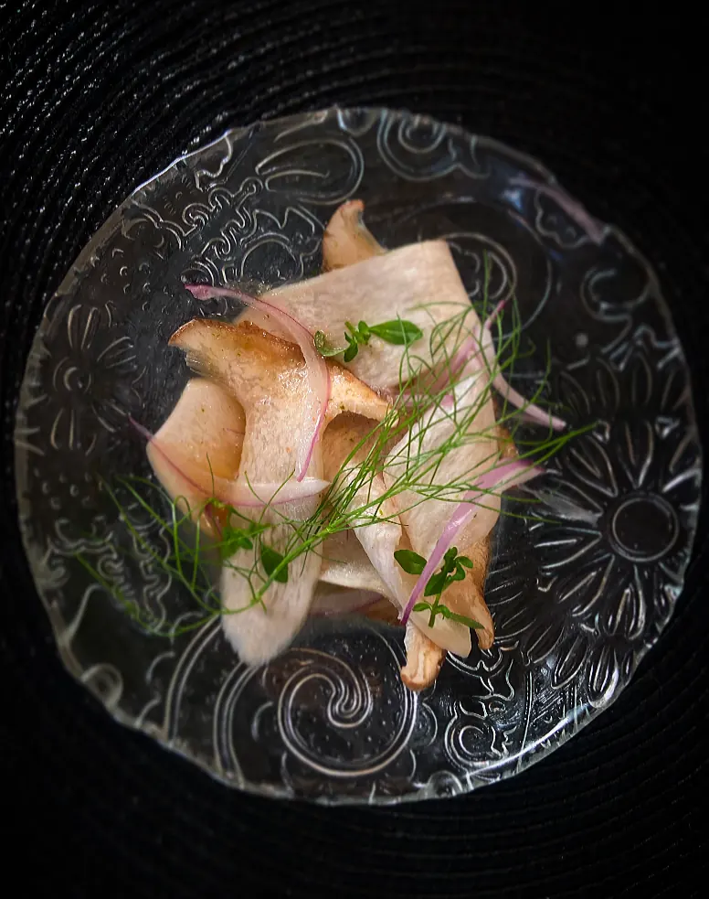
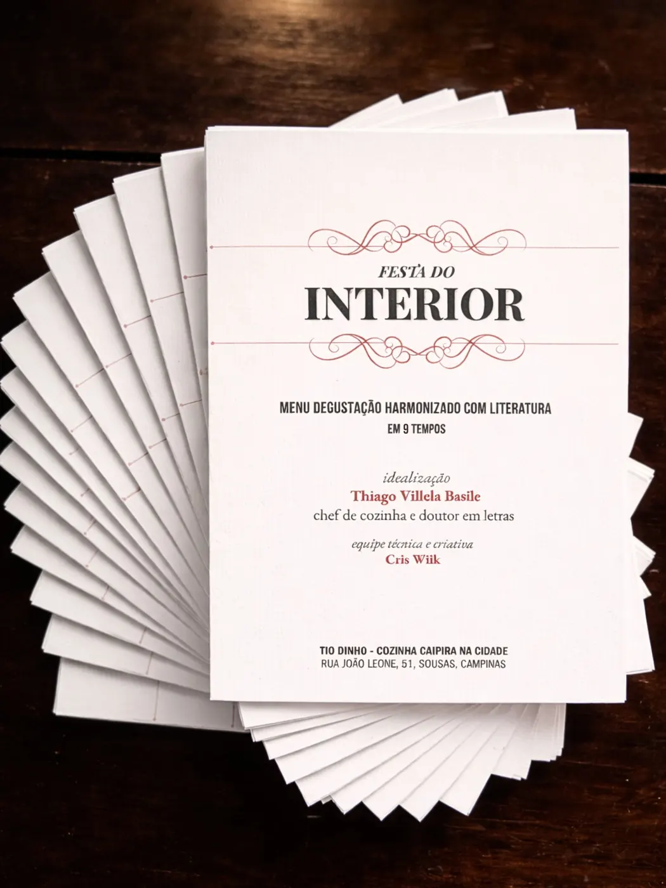
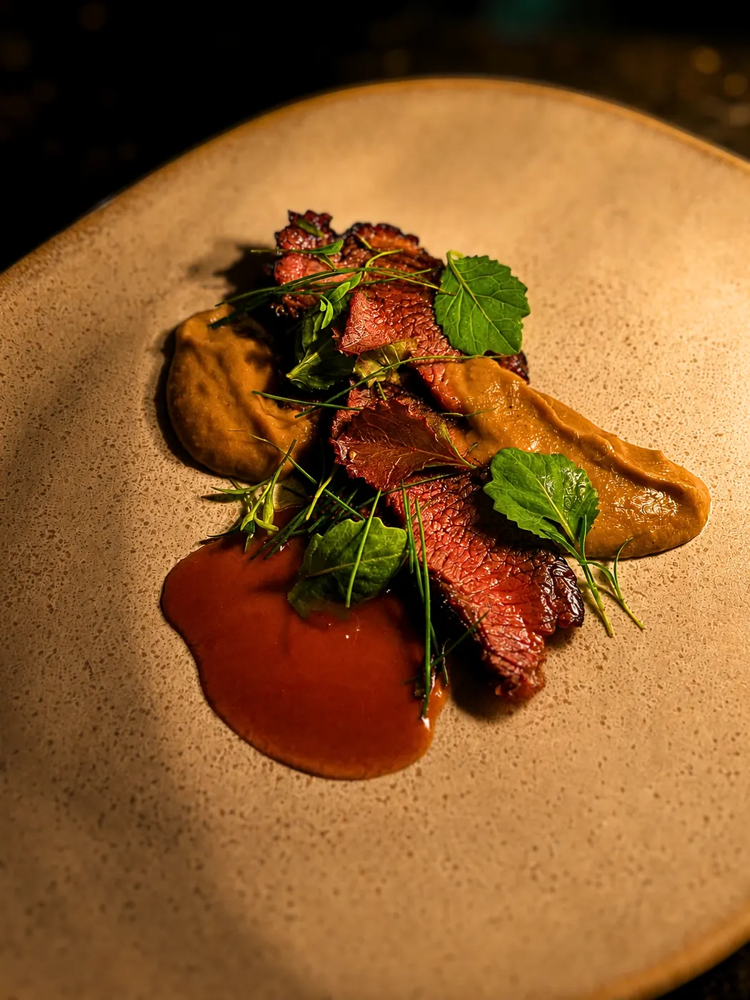
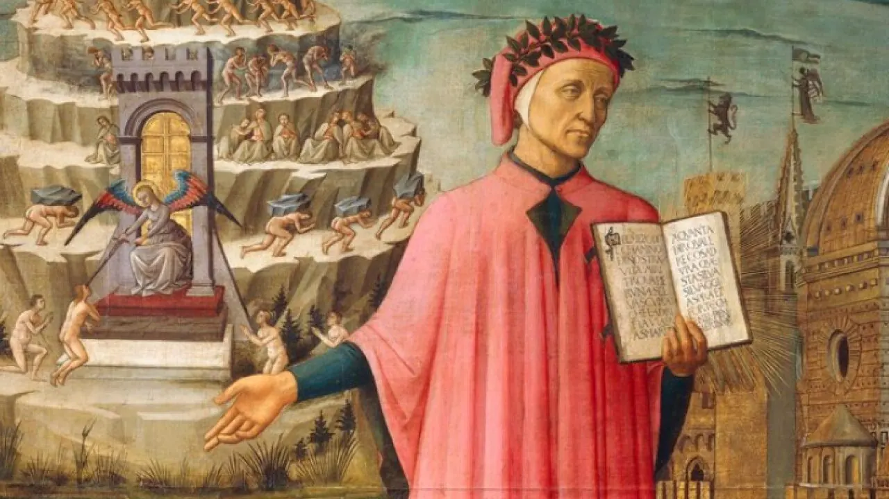
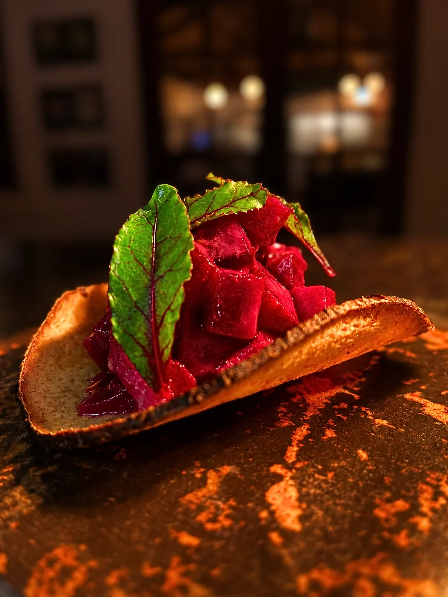

Dom Casmurro
Um menu degustação harmonizado com Dom Casmurro, de Machado de Assis, construído a partir das possibilidades de encontro entre o romance e a experiência à mesa.
Literatura e gastronomia são linguagens diferentes. Cada uma tem seus próprios recursos para produzir sentidos.
Ao harmonizá-las, buscamos pontos de contato. Às vezes eles são bastante concretos: um alimento citado em uma obra, um lugar, uma época. Em outros casos, partimos de uma sensação, de uma estrutura, de uma imagem ou de uma ideia.
A comida acrescenta uma dimensão particular à leitura: o corpo. Visão, olfato, tato, paladar, audição e memória passam a participar da experiência.


Uma vida atravessada por dez décadas, dez textos e dez pratos. Minou Drouet, Rimbaud, Álvares de Azevedo, Júlio Kamêr R. Apinajé, Dante, Fernando Pessoa, Conceição Evaristo, Mário Quintana, Manoel de Barros e Cora Coralina acompanham o percurso.
Cada menu nos permite experimentar diferentes maneiras de harmonizar literatura e gastronomia.
Ao longo das edições, esses processos de criação também se tornaram objeto de pesquisa: como um prato pode dialogar com um texto? O que muda na leitura quando o corpo participa dela? O que acontece com um sabor quando ele é colocado em relação com uma narrativa?
A pesquisa parte da própria prática desenvolvida no Tio Dinho e reúne as duas áreas de atuação do chef Thiago Basile: a gastronomia e os estudos literários.



Publicado em 2026, À Mesa reúne dramaturgia, reflexão crítica, receitas e registros de processo para investigar a gastronomia como linguagem teatral.
Conheça o livro